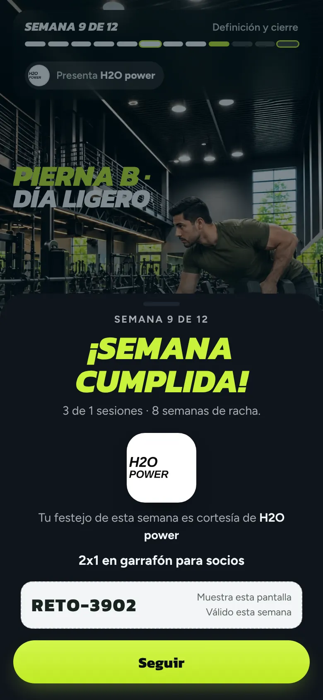
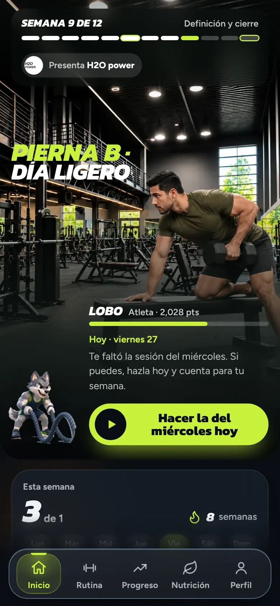
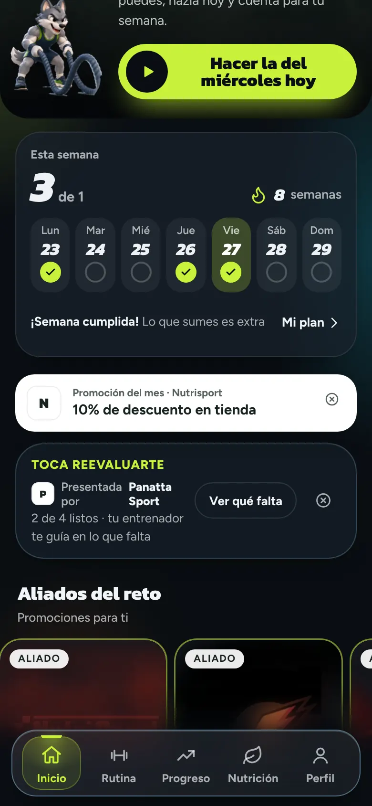
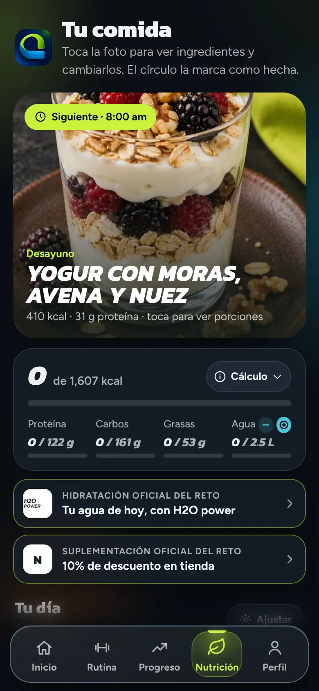
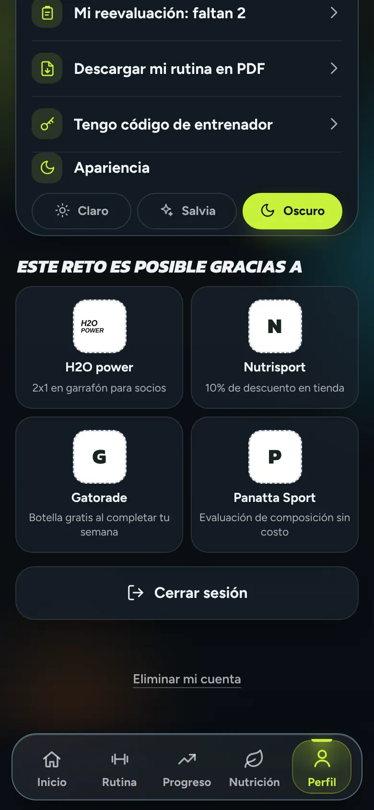
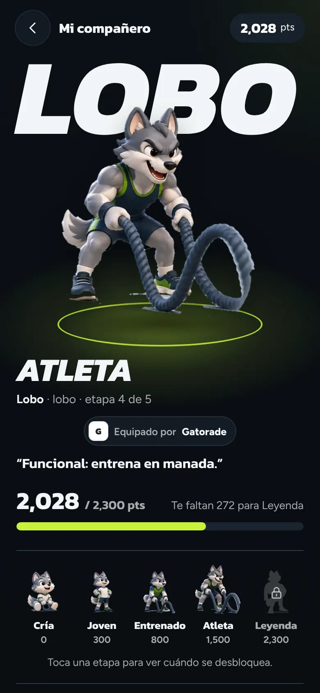
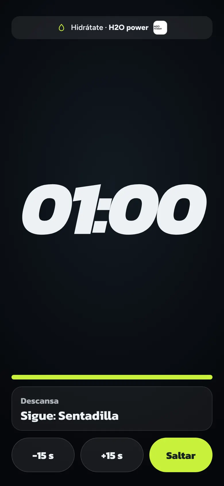
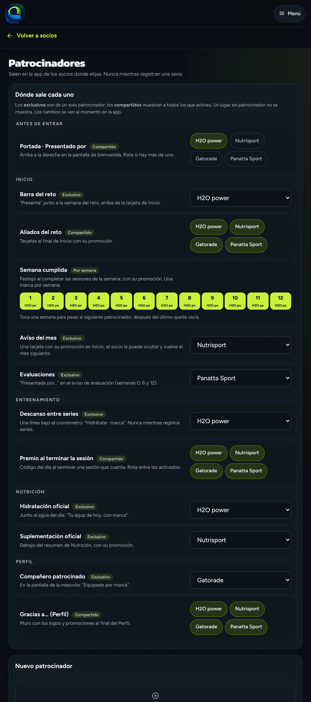
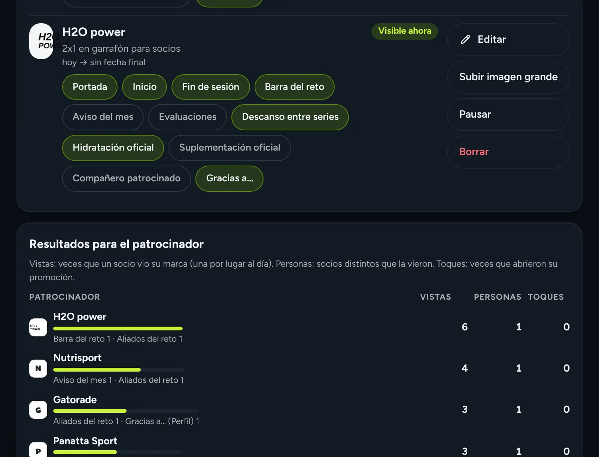
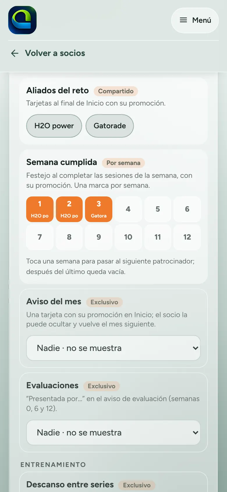

Ya funcionando en la app (en la rama, todavía sin publicar). Capturas de la app real con patrocinadores de prueba.
Lo que ve el socio

Semana cumplidaFestejo con su promoción y código, una marca por semana.

Barra del reto“Presenta H2O power” junto a la semana.

Aviso del mes y EvaluacionesPromoción del mes (se puede ocultar) y “Presentada por”.

Hidratación y Suplementación oficialesDebajo del resumen de Nutrición.

Gracias a…Muro de patrocinadores al final del Perfil.

Compañero patrocinado“Equipado por Gatorade”.

Descanso entre series“Hidrátate · H2O power” arriba del cronómetro.
Además siguen los tres de antes: Portada (Presentado por), Aliados del reto en Inicio y el premio al terminar la sesión.
Panel del director

Dónde sale cada unoExclusivos con selector (al dárselo a uno se le quita al otro), compartidos con botones, y las 12 semanas del festejo.

Editar y ResultadosBotón Editar en cada patrocinador; vistas, personas y toques con “Copiar reporte”.

En el celular del director
Cómo funciona
Dar de alta sin lugar: ya se puede; no aparece en ningún lado (y su tarjeta dice “Sin lugar: no se ve”) hasta que lo acomodes.
Lugar vacío = pantalla normal: si un lugar no tiene patrocinador, el socio no ve nada extra.
Cambios al momento: mover, editar, pausar o borrar se refleja en la app de los socios en cuanto se guarda.
Conteo: una vista por lugar al día por socio, y un toque cada vez que abre la promoción. Se guarda en el expediente de cada socio (no hay que cambiar reglas de la base de datos) y el panel suma todo.
Nunca durante el registro de series: en entrenamiento solo aparece en el descanso y al terminar.